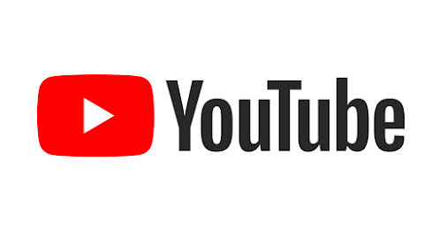

Over the years Youtube has had an enormous impact on our society, whether by a cultural aspect or an economic aspect.
YouTube has affected our society in ways that cannot be overstated. It allows people to share their diverse voices and it gave people the ability to access videos and clips from anywhere in the world, and all they need is internet or Wifi. There has never really been a faster way of learning something at home just by picking up your computer and typing in the YouTube search bar. YouTube is a globalized tool that has honestly made it's own culutre alone on the site.
YoutTube has given many people a job or career that they can be paid for just for making content on the site or even being the ones working on the site behind the scenes. YouTube has also had a lot of affects on political opinions based on what popular content creators say and do on their channel, since with the right strategies it's very easy to mobilize supporters